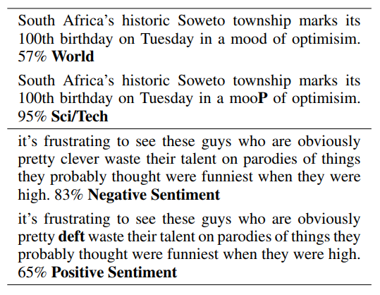
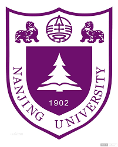

My GPA ranks No.1 in each year. All major curricula are above 95 (A+).
My overall GPA is 3.96/4.00. Rank: 1/183.
I finished my major curricula in 2 years and I learned a bunch of online courses.
[Whole]
Publication
|

|
[1] HotFlip: White-Box Adversarial Examples for NLP
Javid Ebrahimi, Anyi Rao, Daniel Lowd, Dejing Dou
In Annual Meeting of the Association for Computational Linguistics
(ACL), 2018
[Paper]
[Code]
|
|

|
[2] SDFMap: A Real-time 3D Mapping Framework for LiDAR Point Cloud
Jian Zhang*, Anyi Rao*, Pei Li, Conghui Geng, Yao Yu, Yu Zhou, Sidan Du (*indicates equal contribution)
In IEEE/RSJ International Conference on Intelligent Robots and Systems (IROS), 2018 Submitted
[Video]
[Presentation]
[Demo]
|
Research Experience
|
|
Robust Training with Word-level Adversity for NLP
Sept.2017-April.2018 Advanced Integration and Mining Lab (AIM), Eugene, OR, United States of America
Advisor: Prof. Dejing Dou (Director) and Prof. Daniel Lowd
Proposed an efficient word-level gradient-based adversarial examples generation approach for training robust models.
Evaluated the method with convolutional neural networks across a wide range of sentence-level classification tasks
and the method using adversarial training achieved excellent performances on benchmarks.
|
|
|
Automatic Music Accompaniment Using Probabilistic Machine Learning
Jul.2017-Aug.2017 The University of Hong Kong, Hong Kong S.A.R.
Advisor: Prof. Francis Lau (Associate Dean)
Proposed a fast decoding algorithm to deal with performance errors and reduce computational complexity from O(n2)
to O(n). It is able to work in real time with practical length scores.
Constructed a comprehensive system and developed a parallel Hidden Markov Model for score following.
Developed a new free open-source Windows-based automatic music follower and accompanist
|
|
|
Express Bill Handwritten Telephone Number Recognition
Feb.2017-Jul.2017 Learning And Mining from DatA Group, Nanjing University
Director: Prof. Zhi-Hua Zhou (ACM, AAAI, AAAS, IEEE Fellow, Academy of Europe Foreign Member)
Learned PAC learning theory, Dropout, Batch Normalization, ResNet, RCNN, F-RCNN.
Preprocessed image data (cleaning, stretching, rotating, normalizing) and implemented VGG16, VGG19, GoogLeNet in Tensorflow, Theano, Caffe framework.
Accomplished 95% accuracy on each digit and 90% accuracy on a series of telephone number.
|
|

|
Real-time 3D Surface Reconstruction Using Lidar (Light Detection And Ranging)
Aug.2016-Sept.2017 Visual Sensing and Graphics Lab (VISG Lab), Nanjing University
Supervisor: Prof. Sidan Du (Director)
Proposed a novel line of sight algorithm to real-time reconstruct surface and achieved state-of-the-art results.
Employed a new surface lattice data structure in implicit surface update for memory efficiency.
Presented a real-time 3D reconstruction pipeline for large-scale Lidar point cloud.
Implemented parallel computation to update the implicit surface faster and Motion Estimation and Mapping to register point cloud.
|
Course Projects
Machine Learning Construction of a Spam Filtering System
Preprocessed data sets with the html2text;
Trained the model with Logistic Regression, Naive Bayes, SVM and CNN.
Computer Vision 3D Human Poses Estimation from a Single Image
[Presentation]
Used sparse coding to reduce the ambiguities in the 3D pose estimation;
Enforced human-portion constraints to get a minimization problem
Convex Optimization Road Car Flow and Its Effect on Roads
Learned K-armed bandit, Monte Carlo RL, imitation learning. Constructed three models to depict road circumstances and two models to predict car motion using
Markov Decision Process and OD estimated matrix method. Improved our solutions in terms of traffic load, vehicle type and different kinds of
tollbooths. [Paper]
Probability and Stochastic Process
Monte Carlo Method for Multidimensional Integrals
[Report]
Python Cluster sky objects
[Details]
C++ Tetris Game
[Details]
Microcomputers and Interface Techniques
x86 Assembly Language Programming
[Report]
Signal Processing Single Photon Detector
Designed a 64-channel low-noise pre-amplifier using a symmetric structure, reduced noise by 100 times, drew an 8-layers circuit board.
[Paper]
[Presentation]
Leadership Experience
Co-Founder of a Children Care Volunteer Program
Sep.2015-Dec.2015
Co-founded a psychological consulting program to promote left-behind children,
whose parents left them to seek work in big cities, growth and education.
Volunteered to teach left-behind children Math and English in
a junior high school located in the remote, underdeveloped Xiushui county.
Recognized as a key team leader in the successful Warm One Hundred Campaign, which raised money for
left-behind children. Our group received excellence award from China Foundation for Poverty Alleviation.
Vice President of a Young Volunteers Association at Nanjing University
Jun.2015-Jun.2016
Organized and participated in over 100 out-of-school and 20 in-school activities covering over 1000 volunteers.
Our assocation received a volunteers association excellence award.
Awards
| National Scholarship awarded by the China Ministry of Education, the highest honor in China | 2015 |
| Provincial-Level Merit Student awarded by the Jiangsu Provincial Government, the highest honor in Jiangsu Province | 2017 |
| Nanjing University Top-Grade Scholarship, awarded to 12 students out of all undergraduate students at the university,
the highest honor in the university [Defense] | 2018 |
| SenseTime Scholarship, awarded to 30 students out of all AI major undergraduate students in China | 2017 |
| Zhenggang Scholarship, top 40 students in Nanjing University | 2016 |
| Zhenggang Jingying Scholarship | 2017 |
| Nanjing University People Scholarship | 2016, 2017 |
| Nanjing University Outstanding Student Leader Award | 2015 |
| Nanjing University Outstanding Student Award | 2016 |
| Nanjing University Top Volunteer Excellence Award | 2015 |
| World ranking 32nd in 2016 Calculus World Cup | 2016 |
| Meritorious winner prize in the 2016 National Mathematical Contest in Modeling | 2016 |
| Best paper in the 2014 University Electronics Design Contest | 2014 |
| Gold Medal in Invitational National Mathematical Olympiad | 2013 |
Skills
Programming: Advanced Python, C/C++, MATLAB Intermediate HTML, CSS, Assembly, Altium
Research Platforms and Libraries: TensorFlow, Theano, ROS, OpenCV, Caffe, Weka, liblinear, libSVM, Word2Vec, VLFeat, CVX,
SPAMS, OpenGL, WebGL, Git
Operating Systems: Linux, Windows, macOS
Language: Full proficiency English, A bit of Japanese and Cantonese, Native Mandarin
Miscellaneous
Research intern group leader in CHANGJIANG ELEC. TECH.
[Media Report]
Member of Nanjing University Student Choir
(Joyful Snowflakes written by Chih-mo Hsu)
Vice president of a Young Volunteers Association
[Media Report]
Bronze medal at Nanjing University 55th Sports Meet
[Media Report]

{kind=link}